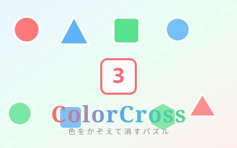
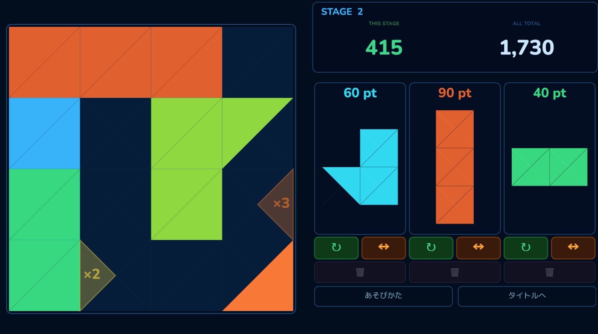
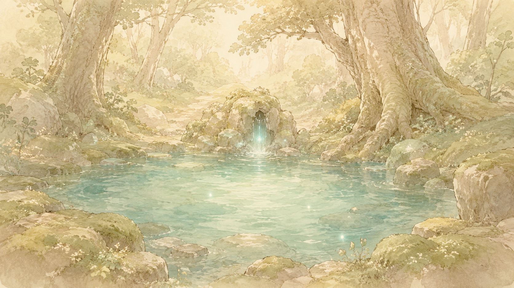
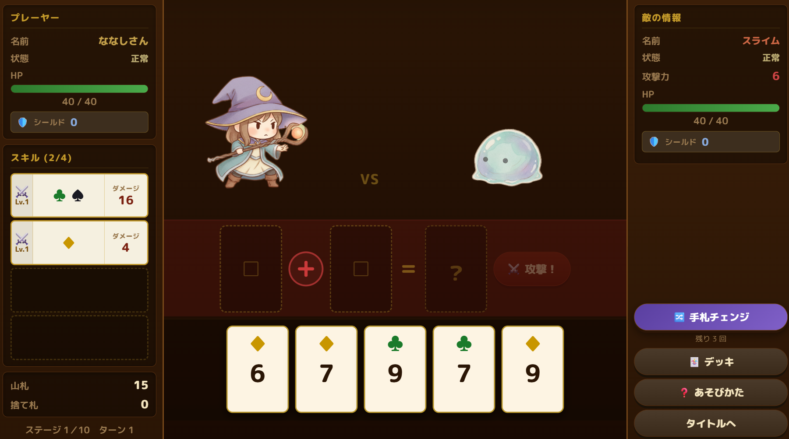
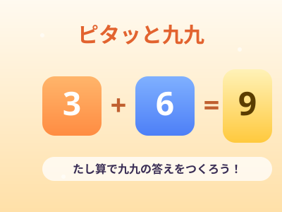
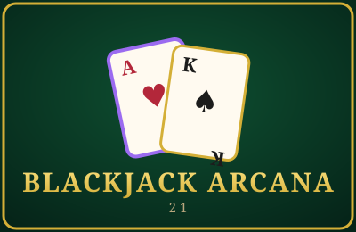

カラークロス
5×5マスに散らばる3色のマークを、色と数字が書かれたカードで消していくパズル！カードの上下左右にある同じ色のマークの数を数えて、数字とぴったり合えば大当たり。マークを動かして狙いを定め、盤面を空っぽにしよう！
色ごとの数を数える「カウント力」と、次にどのマークをどこへ動かせば数が合うかを考える「先読み力」が身につきます。倍率の高いマークを狙う判断で、数の大小比較や掛け算的な感覚も自然と養われます。

トライスクエア
5×5マスのグリッドに三角形と正方形のブロックを置いて、すべてのマスを埋めよう！ボーナスパネルを狙ってハイスコアを目指せ！
三角形の形・向き・組み合わせを考えながらブロックを置くことで、図形認識力と空間把握力が自然と身につきます。「どの向きに置けばはまるか」を試行錯誤する中で、図形を操作する力が育まれます。

一筆迷宮
一筆書きの要領でマスをなぞって迷宮を探検しよう！道を選びながら進み、出会った敵とはターン制バトル！経験値をためてレベルアップし、装備やスキルを強化しながら15階のクリアを目指せ！
一度なぞったマスは通れないというルールの中で「どの順番で進めばすべてのマスをまわりきれるか」を考えることで、一筆書き（オイラー路）の考え方や経路・図形を見通す力が自然と身につきます。

アリスメティカ
足し算や引き算をつかいながら敵を倒そう！条件が揃えばスキルが発動するよ！自分好みのスキルとデッキを構築して完全クリアを目指そう！
スキルの発動条件の中には、「倍数」があります。足し算・引き算だけでなく、掛け算九九の知識も鍛えられます。

ピタッと九九
５×５の盤面に並んだ数字を選んでスッとすべらせよう。他の数字にぶつかると足し算されるよ。選んだ段の九九の答えになったら消えてスコアゲット！マスがいっぱいになる前に、9つの式をぜんぶ作れるかな？
２の段から９の段までの九九の答えを、たし算で作りながら覚えられます。「この数字と合わせると何の段の答えになるかな？」と考えることで、倍数の感覚とたし算のすばやさが身につきます。

ブラックジャック・アルカナ
トランプの合計で敵を倒すカードバトル！手札を引いて21を超えないギリギリを狙おう。「偶数」「〇の倍数」などのスキルがそろうと合計に倍率がかかり、ダメージが大きくアップ！ぴったり21を出せば倍率×7の大ダメージだ。
偶数・奇数の判別や、3〜10の倍数・素数の判定を、カードの合計を作りながら自然に身につけられます。「あと1枚足したら〇の倍数になるかな？」と逆算して考える力も養います。

マスブレ ～たしざん～
自分のカードをかさねると数字が足し算されるよ。敵と同じ数字を作ってぶつけよう。ボスまでたどり着けるかな？
楽しみながら足し算の練習ができます。繰り上がりの足し算の特訓にもなります。難易度によって作る数字の大きさが違うので、まずは初級からやってみてください！

マスブレ ～ひきざん～
自分のカードをかさねると数字が引き算されるよ。敵と同じ数字を作ってぶつけよう。１回は引き算しないと使えないよ。ボスまでたどり着けるかな？
楽しみながら引き算の練習ができます。繰り下がりの足し算の特訓にもなります。難易度によって作る数字の大きさが違うので、まずは初級からやってみてください！

マスブレ ～かけざん～
自分のカードをかさねると数字が掛け算されるよ。敵と同じ数字を作ってぶつけよう。敵やアイテムも出てくるよ！ダンジョンを突破できるかな？
楽しみながら掛け算の練習ができます。掛け算九九を覚える練習になります。難易度によって作る数字の大きさが違うので、まずは初級からやってみてください！

マスブレ ～かけざん２～
自分のカードを場のカードにかさねると数字が掛け算されるよ。１００を超えたときの数字で敵を攻撃！できるだけ大きな数字を作るにはどうすればいいか考えよう！ボスまでたどり着けるかな？
楽しみながら掛け算の練習ができます。掛け算九九だけでなく、３０×３などの計算も行います。難易度によって敵の強さが違うので、かけざん１と比べてより戦略的なゲームになっています。まずは初級からやってみてください！

マスブレ ～わりざん～
自分のカードを場のカードにかさねると数字が割り算されるよ。商と余りの数でねらったパネルを消していこう！すべてのラウンドをクリア出来たら君は割り算マスターだ！
楽しみながら割り算の練習ができます。商や余りの数を考える練習になります。割り算は掛け算九九をしっかりマスターしたうえで商を立てるところで苦痛を感じる子どもが多い気がします。楽しみながら少しずつ経験を積んでくださいね。上級になるにつれてミッションがきびしくなります。まずは初級からやってみてください！

マスブレ ～ぶんすう～
自分の分数カードをケーキにかさねると数字が足し算されるよ。３つのケーキを同じ形にできたらラウンドクリア！ターゲットをねらってスコアアップをめざそう！
楽しみながら分数の足し算の練習ができます。分数を単なる数字ではなく量でとらえる練習になります。また、分母が異なる分数の足し算の基礎が学べます。残り行動回数を見ながらターゲットをねらいにいくスリリングな楽しさをぜひ体験して下さい。

マスブレ ～しょうすう～
小数の書かれたカードをつかって数直線を伸ばしていきます。色々なイベントが待っています。5.0を超えてしまうとダメージを受けるのでゲームオーバーにならないように気を付けよう！
小数の足し算を数直線をつかって行います。小数の大きさの感覚を視覚的に捉えられるようになります。敵やアイテムなど色々登場するので楽しみながら学ぶことができます。

ナンバーブリック
てもちの数字ブロックを、縦横すべて足したとき決められた数になるようにマスに置いていこう。
楽しみながら足し算で１０を作るゲームを作りたかったのですが、数独のような頭の体操ゲームが誕生しました。計算能力というよりは状況判断能力や注意力の向上に効果がありそうです。難易度「むずかしい」は作者ですら一度もクリアしたことがありません。ぜひチャレンジしてみて下さい。

たしざんすごろく
選んだ数字の分だけすごろくのマスを進むことができるよ。残り時間を増やしたり、ポイントを稼いだり、アイテムコンプリートを目指したり、色々やりながら１００マス目を目指そう！
繰り上がりの足し算を視覚的に表現したすごろくを作りました。例えば「７」の位置にいて「１５」のマスに行くには、あと３と５、つまり８を足せばよい、というのが視覚的に表現されているので、頭の中でイメージしやすくなります。

モジュロブリッツ
自分の数字をマスの数字に重ねると足し算されるよ。縦横で３つ同じ数字をつなげると消えるよ。コンボを作ってクリアを目指そう！
１桁の足し算の練習ができます。ガイドモードもついているので最初のうちはガイド機能を使って慣れることもできます

タリーブリッツ
上から数字ブロックをねらったところに落とそう！ぴったり１０を作るとブロックが消えるけど、１０より大きい数を作るとおじゃまブロックになっちゃうよ。全ラウンド制覇できるかな？
繰り上がりの足し算を行う前段階の、ぴったり１０をつくる練習です。時間に追われずじっくり考えられるように自分のタイミングで落とせる落ちものゲームにしてみました。

たすてん
縦横で足して１０になるように、パネルを移動しよう！十字に消せる🎆や、好きな数字を消せる🌠を使って目標スコアをクリアしていこう！
繰り上がりのない基本的な足し算の練習になります。

わりざん鉱山
一筆書きでダンジョンを探索して宝石をたくさん集めよう！アイテムを活用してダンジョンをクリアしよう。宝石につられて失敗しないように注意してね。
割り算の商を立てる練習になるこ思いこのゲームを作りました。割り算とは何をやっているのかを視覚的に確認できます。掛け算九九をマスターしていても商を立てるのは難しいものですが、楽しみながら商を立てる練習をしてもらえたら嬉しいです。割り算が分からなくてもプレーできます。また、余りを計算できるとゲームを有利に進められるので、そこまでできるようになるとさらに良いですね。

かけざんダンジョン
自分のカードで掛け算を作ると、四角ができるよ。敵や岩をよけて四角をマップに置いていこう。⚔や⛏を使ってね。全１０ステージ完全クリアを目指そう！
掛け算が長方形の面積になることと、その大きさを視覚的に認識することがねらいです。


トレジャー・クラフト
冒険で手に入れた素材で武器や防具をクラフトしよう！強くなってさらに難しい場所を探索しよう！
お金の計算をRPG風な冒険で学ぶゲームです。冒険で手に入れたものを売ったり合成したりしながら少しづつ強くなっていくのが楽しいです！